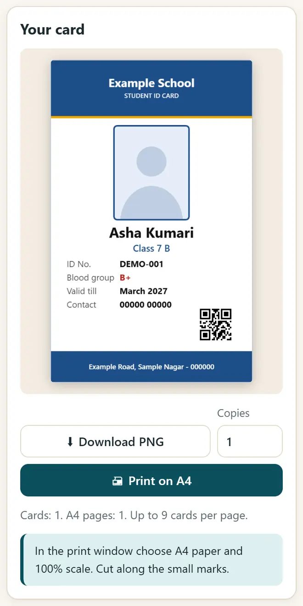

اسٹوڈنٹ ID کارڈ میکر: ID کارڈ مفت بنائیں اور A4 پر پرنٹ کریں
چھوٹے اسکول، کوچنگ کلاس یا کسی تقریب کے ID کارڈ بنانے کے لیے ڈیزائن سافٹ ویئر کی ضرورت نہیں۔ یہ مفت ایپ آپ کی لکھی معلومات سے کارڈ بنا دیتی ہے، اور بچوں کی تصویریں آپ کے آلے سے باہر نہیں جاتیں۔
مختصر جواب
ID کارڈ میکر کھولیں، “طالب علم” چنیں اور اسکول کا نام اور طالب علم کی معلومات لکھیں۔ تصویر لگانے کے لیے “فوٹو چنیں” دبائیں۔ پوری جماعت کے لیے “کئی کارڈ (فہرست)” چنیں اور فہرست پیسٹ کریں۔ پھر “A4 پر چھاپیں” دبائیں: ہر کارڈ 54 × 86 mm کا ہے، اور ایک A4 شیٹ پر 9 کھڑے یا 10 آڑے کارڈ آتے ہیں۔
5 قدم میں اسٹوڈنٹ ID کارڈ
-
کارڈ کی قسم چنیں اور اسکول کی معلومات بھریں
ID کارڈ میکر کھولیں۔ یہ نمونہ معلومات کے ساتھ کھلتی ہے۔ “طالب علم” چنیں (“عملہ” اور “مہمان” بھی ہیں)۔ اسکول کا نام، پتا، رابطہ نمبر اور یہ کہ کارڈ کب تک کارآمد ہے، لکھیں۔ لوگو ہو تو “لوگو چنیں” دبائیں۔
-
طالب علم کی معلومات اور تصویر شامل کریں
“ایک کارڈ” چنا رہنے دیں اور نام، جماعت اور سیکشن اور ID نمبر لکھیں۔ بلڈ گروپ کارڈ پر چاہیے تو اسے چنیں۔ “فوٹو چنیں” دبائیں، چہرے کی صاف تصویر چنیں اور سلائیڈر اس وقت تک ہلائیں جب تک چہرہ فریم کے بیچ میں نہ آ جائے۔

طالب علم کی معلومات لکھیں اور تصویر شامل کریں۔ -
پوری جماعت کے کارڈ بنائیں
“کئی کارڈ (فہرست)” چنیں اور ہر سطر میں ایک طالب علم لکھیں یا پیسٹ کریں: نام، جماعت، ID نمبر، بلڈ گروپ، کب تک کارآمد، رابطہ، پتا۔ صرف نام ضروری ہے، اور آپ Excel سے بھی پیسٹ کر سکتے ہیں۔ “نمونہ CSV ڈاؤن لوڈ کریں” سے ترتیب سمجھ میں آ جاتی ہے۔ تصویر کی فائلوں کے نام ID نمبر یا نام پر رکھیں اور “فوٹو شامل کریں” سے سب ایک ساتھ شامل کر دیں۔
-
ڈیزائن چنیں
“کھڑا” یا “آڑا” اور ایک رنگ چنیں۔ ID نمبر والا QR کوڈ چاہیے تو “ID نمبر کا QR کوڈ شامل کریں” پر نشان لگائیں۔
-
A4 پر پرنٹ کریں یا ڈاؤن لوڈ کریں
“A4 پر چھاپیں” دبائیں۔ پرنٹ ونڈو میں A4 کاغذ اور 100% اسکیل چنیں، پھر چھوٹے نشانوں پر کاٹیں۔ “PNG ڈاؤن لوڈ کریں” سے کارڈ تصویر کے طور پر محفوظ ہوتا ہے۔

QR کوڈ والا تیار اسٹوڈنٹ ID کارڈ۔
ID کارڈ چھاپنے کے مشورے
- موٹے A4 کاغذ پر چھاپیں۔ پھر کارڈ لیمینیٹ کروائیں یا کارڈ ہولڈر میں رکھیں۔
- ابھی تصویر نہیں ہے؟ کارڈ پر تقریباً 20 × 25 mm کا خالی فریم آتا ہے، جہاں اسٹیمپ سائز تصویر چپکا سکتے ہیں۔
- ایک فہرست میں 300 تک کارڈ بن سکتے ہیں۔ بڑے اسکول کے لیے ہر جماعت کی الگ فہرست بنائیں۔
- پوری شیٹ چھاپنے سے پہلے اسکرین پر ہجے، ID نمبر اور رابطہ نمبر دیکھ لیں۔ کوئی ID نمبر دو بار آئے تو ایپ بتا دیتی ہے۔
نئے مفت ٹولز اور ہندی میں AI کے اسباق پائیں
ہماری ای میل فہرست میں شامل ہوں: نئی مفت ایپس، نئی گائیڈز اور AI پر ہندی ویڈیو اسباق کی خبر آپ کو ملتی رہے گی۔ کوئی اسپام نہیں۔
صرف بالغوں (18+) کے لیے۔ آپ کبھی بھی اپنا نام ہٹوا سکتے ہیں۔
ہم یہ ٹولز کیوں تجویز کرتے ہیں
- سب کے لیے مفت: نہ اشتہار، نہ سائن اپ، نہ کوئی پیڈ پلان۔
- نجی: آپ کی فائلیں اور معلومات آپ کے اپنے آلے پر ہی رہتی ہیں۔
- فون، لیپ ٹاپ یا اسمارٹ بورڈ پر چلتے ہیں، اور ایک بار کھلنے کے بعد انٹرنیٹ کے بغیر بھی۔
- اردو اور ہندی سمیت 12 زبانوں میں۔
ویڈیو سے سیکھنا پسند ہے؟ ہمارے YouTube چینل پر AI اور مفت ٹولز کے ہندی اسباق دیکھیں۔
اکثر پوچھے جانے والے سوالات
ID کارڈ کا سائز کیا ہے؟
ہر کارڈ 54 × 86 mm کا ہے، تقریباً بینک کارڈ جتنا، اس لیے عام کارڈ ہولڈر میں آ جاتا ہے۔ یہی سائز رکھنے کے لیے 100% اسکیل پر چھاپیں۔
ایک A4 صفحے پر کتنے ID کارڈ آتے ہیں؟
9 کھڑے کارڈ یا 10 آڑے کارڈ۔ ایپ بتاتی ہے کہ آپ کی فہرست کے لیے کتنے صفحے لگیں گے۔
کیا تمام طلبہ کے ID کارڈ ایک ساتھ بنا سکتے ہیں؟
جی ہاں۔ “کئی کارڈ (فہرست)” چنیں اور فہرست پیسٹ کریں، یا “CSV فائل کھولیں” سے CSV فائل کھولیں۔ ساری تصویریں ایک ساتھ شامل کریں: وہ ID نمبر یا نام سے خود مل جاتی ہیں۔
کیا طلبہ کی تصویریں اپ لوڈ ہوتی ہیں؟
نہیں۔ تصویریں اور معلومات آپ کے آلے پر ہی رہتی ہیں؛ کچھ بھی اپ لوڈ نہیں ہوتا۔ کارڈ آپ کے اپنے براؤزر میں بنتے ہیں۔
کیا یہ سرکاری ID ہے؟
یہ آپ کے اپنے اسکول، کلاس، دفتر یا تقریب کا شناختی کارڈ ہے۔ یہ سرکاری ID نہیں ہے، اور اسے صرف اسکول یا منتظم کو ہی بنانا چاہیے۔
کام کی لگی؟
کسی دوست، ساتھیوں یا اپنے اسکول کے WhatsApp گروپ میں بھیجیں۔